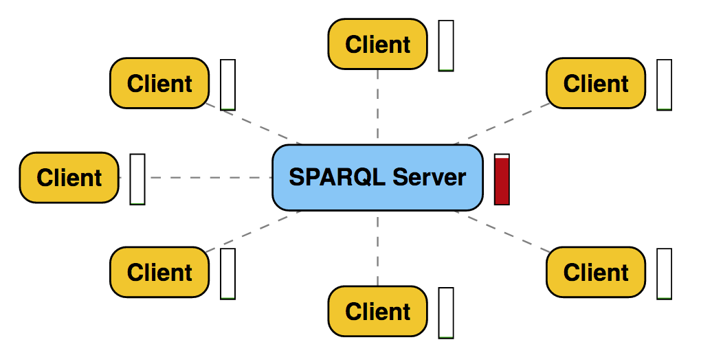
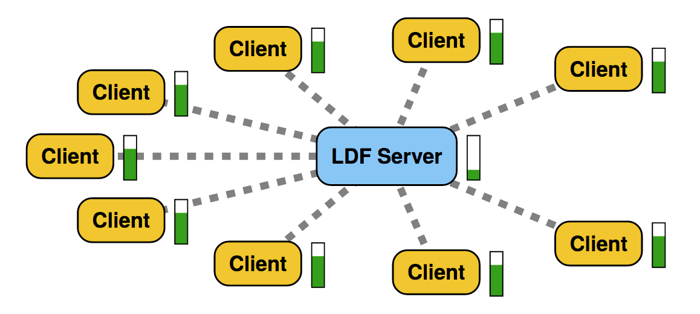

Storing and Querying Evolving Knowledge Graphs on the Web
Storing and Querying Evolving Knowledge Graphs on the Web
Web
Knowledge Graphs
Storing
Querying
The Web is a global information space
a.k.a. The World Wide Web (WWW)
Mostly used by humans through Web browsers
Web is focused on humans
-
Web pages show information
Visualized using Web browsers
-
Clicking on links
To discover new information
-
Search information
Using search engines such as Google, Bing, ...
Achieving tasks requires manual effort
-
Will it rain next week?
- Find a weather prediction website
- Select your location
- Navigate to next week
-
Finding a travel time and destination for a group of people
- Comparing agendas
- Comparing interests: nature, musea, ...
- Regional temperatures
- Geopolitical status
- ...
What if intelligent agents
could do these tasks for us?
I Have a Dream
A Web where intelligent
agents are able to achieve
our day-to-day tasks.
2001
Tim Berners-Lee
inventor of the Web
1989, CERN Switzerland
The dream: We're getting there
Agents are being introduced that can perform simple tasks


 Google Assistant, Alexa, Siri, ...
Google Assistant, Alexa, Siri, ...
How do these agents work?
→ Execute Queries over Knowledge Graphs
Query = Structured Question
Knowledge Graph = Structured information
→ Structured questions over structured information
A Knowledge Graph is
a collection of structured information
An Evolving Knowledge Graph is
a collection of structured information that evolves over time
Web ✅
Knowledge Graphs ✅
Storing
Querying
How to store and query evolving knowledge graphs on the Web?
Focus on four sub-challenges
-
Generating evolving knowledge graphs
-
Storing evolving knowledge graphs
-
Querying knowledge graphs on the Web
-
Querying evolving knowledge graphs on the Web
Experimentation requires realistic data
Experimentation on
evolving knowledge graph systems
requires realistic evolving data
Generating Public Transport Data
- Time
- Space
- Complex relationships
Population Distributions as Input

Positive correlation between population and stops
Generation Algorithm
-
Based on existing techniques
Public transport network design
-
Multiple generation phases
Stops, Edges, Routes, Trips
PoDiGG: Example

PoDiGG: Example

PoDiGG: Example

Realism Evaluation
Measured using distance functions
Generate realistic
evolving knowledge graphs
✅
How to store evolving knowledge efficiently,
while still allowing efficient queries?
Storing multiple knowledge graph versions
Problem: overlapping data between versions
Solution: only store differences

Problem: querying inefficient for long chains
Solution 2: differences relative to snapshot

New Query Algorithms
-
Querying within a single version
Which books were available in the library yesterday?
-
Querying between versions
Which books were exchanged between last week and today?
-
Querying across versions
At what times was this book present?
Experiment: Querying in single versions

Experiment: Querying between versions

Experiment: Querying across versions

How to store evolving knowledge efficiently,
while still allowing efficient queries?
✅
Web Querying is multifaceted
- Query languages and extensions
- Web interfaces
- Query algorithms
- ...
Need for a flexible querying platform,
to implement and compare different facets
A set of building blocks
for building query engines
- Each block is very simple
- Blocks can connect to other blocks via strict interfaces
- Combinations of blocks can achieve complex tasks
Comunica is flexible at different levels
Example: find common interests between Ruben Verborgh and me
Handling different Web interfaces
→ Comunica detects type of interface to plan query execution
Need for a flexible querying platform,
to implement and compare different facets
✅
How to query
evolving knowledge graphs
over the Web?
The Web is like a large audience
continuously asking questions
The theatre model

Verborgh 2014
Audience solves questions themselves
The library model

Verborgh 2014
Focus on evolving data
Static data: clients ask a single question
-
Evolving data: clients continuously ask questions
→ Increase in publisher effort
→ How to limit this increase?
Data that changes at predictable rates
-
Playlist of radio station
17:20 - 17:27: Max Richter - On The Nature Of Daylight
17:27 - 17:31: Hans Zimmer - Time
-
Newspaper
Daily, weekly, ...
-
Periodic thermometer
17:00: 18°C
17:01: 17°C
Annotate data with time intervals
-
Publisher:
17:20 - 17:27: Max Richter - On The Nature Of Daylight
17:27 - 17:31: Hans Zimmer - Time
-
Query at 17:25:
17:20 - 17:27: Max Richter - On The Nature Of Daylight
-
Query at 17:27:
17:27 - 17:31: Hans Zimmer - Time
Experiment: Publisher effort lowered

How to query
evolving knowledge graphs
over the Web?
✅
Focus on four sub-challenges
-

Generating evolving knowledge graphs
-

Storing evolving knowledge graphs
-

Querying knowledge graphs on the Web
-

Querying evolving knowledge graphs on the Web
Storing and querying evolving knowledge graphs on the Web
How will this affect you?
-
Behind the scenes
No direct contact
-
Intelligent agents
More complex questions, continuous questions
Notify me 30 minutes before each meeting if it will rain.
-
Decentralization
Control, transparency, privacy, ...
-
→ More research is needed